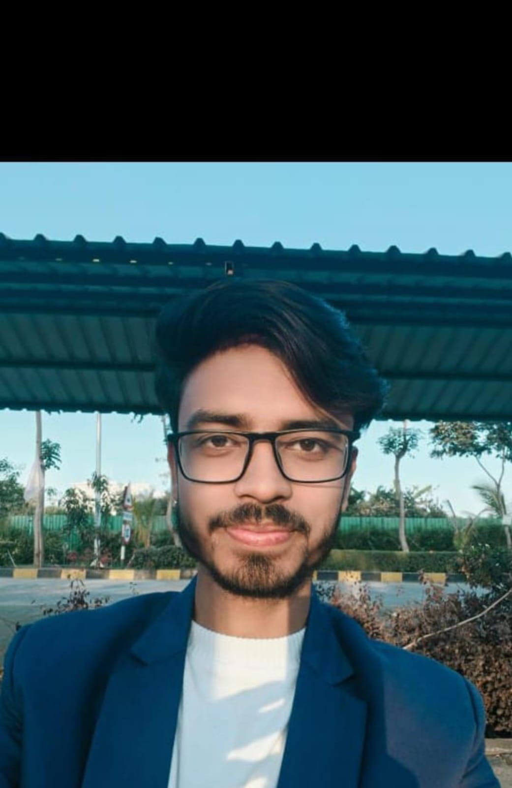

Anurag Thakur
Mob. 9140189784
linkedin/Anurag
email id . anurag.24bce11136@vitbhopal.ac.in B.Tech CSE, VIT Bhopal University (Batch 2028)
Summary
First-year B.Tech Computer Science student at VIT Bhopal with a strong foundation in Python and C++, passionate about software development and problem solving. Proven experience in full-stack development through hackathons and personal projects. Active contributor to campus clubs and technical events. Eager to bring my skills, curiosity, and growth mindset to Google's Associate Software Developer Internship.Technical Skills
Programming Languages: Python, C++-Web Development: HTML, CSS, JavaScript (Learning), React (Planned)
Tools & Technologies: Git, VS Code- Libraries & Frameworks: NumPy, Matplotlib (Basics)
Technical Projects
Myntra Clone - Developed a responsive frontend clone of Myntra using HTML and CSS including product listings and contact form.MoodSpring (Hackathon Project) - Full-stack mental wellness platform with AI-power
Certifications & Achievements
- Participated in ACWO Winter Code Fest for open-source contributions - VIT Bhopal.- Completed Cloud Computing course by NPTEL Vidyarthi.
- Vityarthi Certified in Python foundational course.
- Vityarthi Certified in AI/Ml foundational course.
- Participated in Codeverse Hackathon - VIT Bhopal University.
- Completed MATLAB Course (basic level)
Skills & Competencies
-
• Event Planning & Coordination
• Technical & Cultural Event Management
• Logistics & Operations
• Marketing & Promotions (Reels & Campaigns)
• Budget & Resource Management
• Team Leadership & Cross-functional Collaboration
• Problem-Solving & Crisis Management
• Vendor & Client Relations
• Strong Communication & Negotiation
Extra caricular activities
Core Member-VITKULT Club and VITRONIX club
-
• Leading coordination for the inaugural VITKULT event, handling end-to-end logistics and
team assignments.
• Working on creative promotions, audience engagement, and real-time event troubleshooting.
• Collaborating with other teams for publicity and maximizing reach through strategic communication.
Event Organizer - School Events
Pre-University Experience• Successfully executed major events like Annual Day and Farewell.
• Managed logistics, handled coordination with faculty, and ensured smooth event flow.
• Spearheaded promotional ideas that boosted student participation.